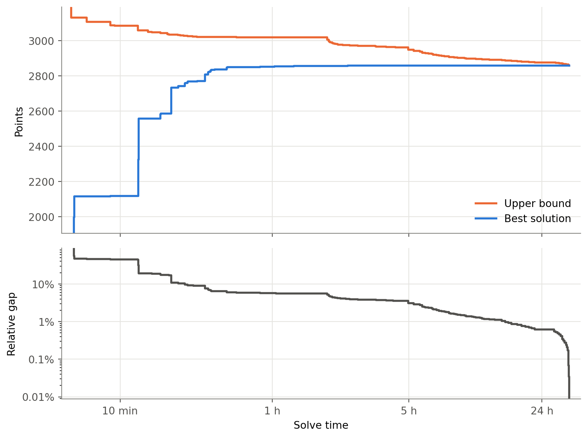
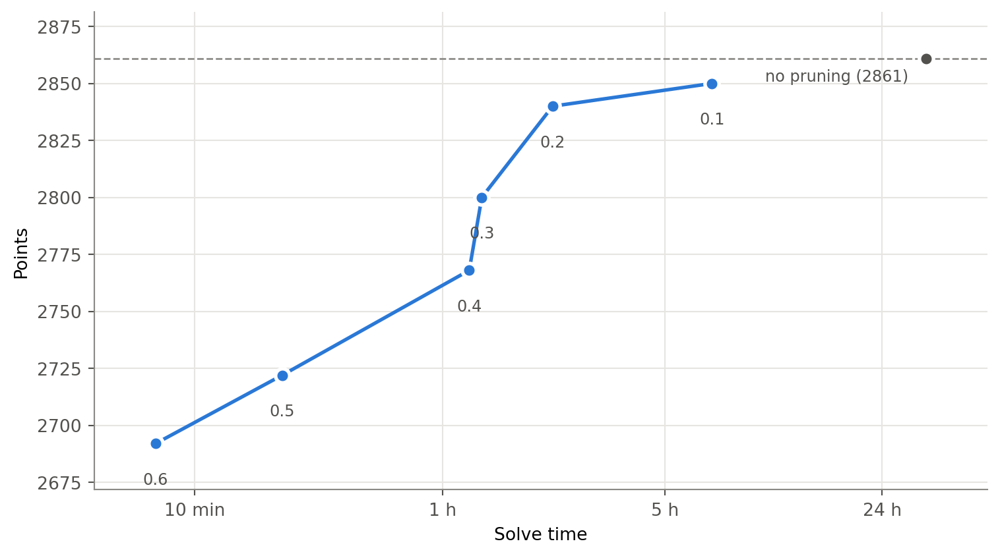
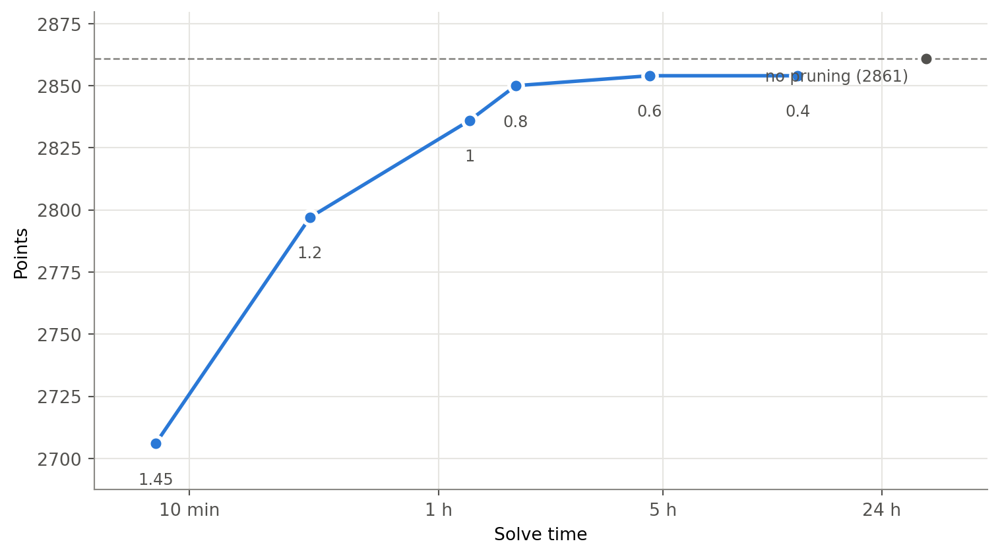

| player_id | gw | pos | team | price | points | |
|---|---|---|---|---|---|---|
| 0 | 1 | 1 | GK | Malmö FF | 6.0 | 5.0 |
| 1 | 1 | 2 | GK | Malmö FF | 6.0 | 4.0 |
| 2 | 1 | 3 | GK | Malmö FF | 6.0 | 7.0 |
Playing Fantasy Allsvenskan in Hindsight
This project explores the maximal possible Fantasy Allsvenskan 2026 score. Instead of playing the game in the standard, predictive manner, we look at the season in hindstight, with the knowledge of how all players performed, and try to figure out the play that would have given the highest number of points. We phrase the problem as an integer program. The program is rather large, and we also investigare certain approximations and clever efficient solutions. On this page we present the optimal play we have found and invite all nerds to find faster ways of getting there. The page is updated as more gameweeks are completed.
Introduction
Allsvenskan is Sweden’s highest football league (21st in Europe UEFA). Including 16 teams, from Malmö in the south, to Uppsala in central Sweden (there are no northern teams since GIF Sundsvall were relegated in 2022), the league is played over 30 gameweeks from April through November. Mjällby AIF are reigning champions with the all time 75 points record from 2025. As of September 2026, this year Sirius are on track to take their first ever trofy, though 8 gameweeks remain.
For football enthusaists who did not make it as players, Fantasy Allsvenskan provides an alternative chance to be the best, or at least to dominate the local friends league. Based on the enourmously popular Fantasy Premier League, Fantasy Allsvenskan is a strategy game where the objective is to compose a squad of Allsvenskan players, who are then scored based on their real life performance. The fantasy manager who collects the most points over the whole season wins. Now while silly, this is not a simple game. With the option of transfering players between gameweeks, the selection of the starting 11 (out of the 15 player squad), and the choice of a captain (one player who’s score is counted twice), all to optimize a score based on what might happen in the chaotic league, Fantasy Allsvenskan is a highly complex and stochastic prediction problem.
In this project, we simplify the problem by completely removing stochasticity from the equation, trying to approach the maximal possible score. We look at the season in hindsight, knowing exactly how many points each players scored each gameweek. If used correctly, this information should lead to a good score. For instance, while predicting 4 goals from Heintz against VSK is unlikely, choosing to play him, in hindsight, with the knowledge of these goals, is obvious. Now while seeing into the future is a powerful ability (which could be used to bet one’s life savings on Heintz 4 goals instead of playing a childrens fantasy game), fully optimizing the decisions is still a highly complex task. Looking at the each gameweek separately, it is feasible (while not trivial, as budget and player position constraints have to be considered) to select the best players for a starting 11. However, as transfer costs and booster chips are added to the problem, the optimization complexity grows fast.
Alpscode solved the hindsight optimization problem for FPL the 2019/2020 season (this page is inspired by Alpscode’s blog post) by phrasing it as a mixed-integer linear program, and found a solution which scored 4984 points, where the best predictive human player (Joshua Bull: another mathematician) scored 2557 points (mathematical strategy explained here). The rather large difference goes to show the difficulty of the prediction problem.
In this project, we approach the hindsight Fantasy Allsvenskan problem, which to our knowledge has not been solved before. We phrase the problem as an integer program and solve it using highly optimized software. Given that the program is large and the optimization is slow, we also play around with effienct approximations based on preemptively pruning parts of the available choices. So far we have been able to solve the problem to proven optimality, but it takes many hours, and the problem grows with every gameweek. We therefore invite anyone to contribute smart and fast heuristics, such as new pruning strategies. Our code is available in this github repo.
Disclaimer. if it is not yet cristal clear, this page will not help you win the normal, predictive Fantasy Allsvenskan. Not this year nor the coming. That is, unless you can see into the future.
Notational convention. By players we mean actual Allsvenskan football players (like Lien and Hegland), and thus, we call us nerds playing the fantasy game managers. Club refers to an Allsvenskan club (in which the players play, e.g., DIF), while team means a fantasy team that a manager manages.
Rules
The task in Fantasy Allsvenskan is to select a squad of 15 Allsvenskan players (2 goal keepers, 5 defenders, 5 midfielders, and 3 forwards), and out of these select a starting 11 (1 keeper, 3-5 defenders, 3-5 midfielders, and 1-3 forwards), as well as a captain. There should be no more than 3 players from the same Allsvenskan club.
Points are then rewarded to all players in the starting 11 based on their real life game performance. For instance, a goal scored gives 5 points, an assist gives 3 points, and a clean sheet gives a keeper 5 points. Exact number of points awarded are described here. The captain gets double his amount of points.
The points are counted every gameweek (where teams can be adjusted in between) and at the end of the season, the manager with the most cumulative points over all gameweeks is the winner. Given the number or managers (58384 in 2026) compared to the mere 16 clubs, this may arguably be a greater achivement than winning Allsvenskan.
Anyhow, below we detail the squad selection rules and the important booster chips.
Budget
Besides the position and club affiliation constraints, squad selection is limited by a finite monetary budget. Players are initially priced based roughly on how they are expected to perform, and the budget, 100 MSEK, is designed so that it is impossible to fill the team with only expected high scoring players.
Furthermore, player prices change between gameweeks depending on how many managers select them. Players that are sold may drop in price while those who are bought may become more expensive. It should be noted, though, that there is no limit on how many managers can own a certain players. The transfer process is described next.
Transfers
Before every new gameweek, managers get the option to sell and replace their players. The updated squad of course need to respect the club affiliation and position constraints, and furthermore the budget needs to be kept. New players are always bought at current market price (which may move, as described above), but sold at either the market price, if the price has gone down since purchase, or the mean of the market price and price bought at (rounded down to nearest 0.1 MSEK) if the price has gone up since purchase. Furthermore, making a transfer comes with a penalty of 4 points. However managers get 1 free transfer every gameweek, and can save up to 5 in total.
Chips
To complicate things further, there are booster chips can be played to advance the managers position. The high potential upside of the chips can swing a whole season, and it is important to deploy them efficently. A chip is played during a particular gameweek and all chips are played mutually exclusive.
Wildcard. The wildcard chip allows managers to make more than the saved number of transfer, without any penalty. When the wildcard is played, the saved transfer are still saved for the coming week (but without another free transfer). There is one allowed wildcard in gameweeks 2 through 15, and one allowed wildcard in gameweeks 16 through 30.
Loan rangers. Like the wild card chip, the loan rangers chip allows managers to make any number of transfers and furthermore, to violate the club affiliation constraints. This is the chance to fill the team with only DIF players. The caveat is that the squad is reverted back to the previous squad until the next gameweek. Loan rangers can be played once per season.
Park the bus. The park the bus chip affects the points scored by doubling the number of points for all defenders in the starting 11. When playing park the bus, the captain does not get double points.
Dynamic duo. Similarly, the dynamic duo chip boosts points, by instead of doubling, tripling the captain’s points, and at the same time doubling the vice captain’s points.
Data
The data we used for this project is available in this github repo. Compared to the Fantasy Allsvenskan site, which carries a lot of information about all players, including goals, assists, yellow cards, offensive actions, and so on, our data reflects only the things that affect our optimization problem. Accordingly, our main player data file contains information about player prices, positions, club affiliations, and scored points. It is structured as a pandas data frame with with these four data in a row for every gameweek, for every player that is available (some players join mid season). The first rows of the data are shown in Table 1.
(Here player_id 1 is Robin Olsen.)
It should be mentioned that a certain simplification is made here, where the logged player price is recorded at deadline day for each gameweek, while the price may have been lower or higher during the window since the previous gameweek. This means that our optimizer is more constrained, and may score lower than would have been possible in the real game (a conservative choice). Functionality for the possibility to buy a player earlier at a cheaper price earlier in the week may be added later. Alps code considers an alternative player simplification, where a player may always be bought at his lowest price, and sold at his highest, during the time since the last gameweek. This is a less constrained choice which may give a squad which would not have been feasible in the real game.
Integer programming formulation
Here follows a list of all the variables and constraints we used to phrase the integer program.
Objective
base_points
+ captain_bonus
+ two_capt_extra
+ two_capt_vice_bonus
+ pdbus_defender_bonus
- pdbus_captain_removal
- total_penaltyScore is counted by first adding all points of the players in the starting 11, then doubling the captain’s points, then if Dynamic duo is played, add another bonus to the captain, and one to the vice captain, then if Park the bus is played, double all defenders points, but remove the captain’s bonus, and finally subtract all of the penalties accumulated through transfers.
Variables
Player selection variables
permanent(binary, one entry per gameweek and player): keeps track of the players in the squad. Due to Loan rangers we have to differentiate betweenpermanentandfielded.fielded(binary, one entry per gameweek and player): keeps track of the players that are in the playable squad. Normal weeks,fieldedcoincides with permanent, but when Loan rangers is played,fieldeddescribes the free Loan rangers team.start(binary, one entry per gameweek and player): describes the starting 11.captain(binary, one entry per gameweek and player): describes the captain.vice(binary, one entry per gameweek and player): describes the vice captain.
Budget variables
buy(binary, one entry per gameweek and player): describes if a player is bought a specific gameweek.sell(binary, one entry per gameweek and player): describes if a player is sold a specific gameweek.bought_price(integer, one entry per gameweek and player): keeps track of the price at which players in the team were bought.sale_proceeds(integer, one entry per gameweek and player): price at which a player can be sold.sale_proceeds_actual(integer, one entry per gameweek and player): money that you get from players, depending on whether they were sold or not.bank(integer, one per gameweek): the money in the bank.uteam_credit(integer, one per gameweek and player): what a permanent player contributes towards the Loan rangers budget: his full price if he is kept in the Loan rangers squad, and his sale value if he is swapped out.
All integer budget variables are scaled up 10 times from the displayed in-game prices.
Transfer variables
banked(integer, one entry per gameweek): keeps track of the number of banked free transfers.extra(integer, one entry per gameweek*): keeps track of have many transfers more than the banked free transfers are made.
Chip variables
two_capt(binary, one entry per gameweek): keeps track of when Dynamic Duo is played.cap_2c(binary, one entry per gameweek and player): keeps track of the captain when Dynamic duo is played.vice_2c(binary, one entry per gameweek and player): keeps track of the vice captain when Dynamic Duo is played.pdbus(binary, one entry per gameweek): keeps track of when Park the bus is played.cap_pdbus(binary, one entry per gameweek and player): keeps track of the captain when Park the bus is played.uteam(binary, one entry per gameweek): keeps track of when Loan rangers is played.
Constraints
Below, \(p\) is a player and \(w\) a gameweek. \(P_w\) is the set of players available in gameweek \(w\), and \(P_w^{\text{DEF}}\) the defenders among them (similarly for the other positions). The variables are the ones listed above, written with their code names, e.g. \(\text{fielded}_{pw}\). Each rule is followed by the code that implements it.
Squad and formation
Every gameweek the squad has exactly 2 goalkeepers, 5 defenders, 5 midfielders and 3 forwards:
\[ \sum_{p \in P_w^{\text{GK}}} \text{fielded}_{pw} = 2, \quad \sum_{p \in P_w^{\text{DEF}}} \text{fielded}_{pw} = 5, \quad \sum_{p \in P_w^{\text{MID}}} \text{fielded}_{pw} = 5, \quad \sum_{p \in P_w^{\text{FWD}}} \text{fielded}_{pw} = 3 . \]
The starting 11 is taken from the squad, \(\text{start}_{pw} \le \text{fielded}_{pw}\), and has exactly one goalkeeper and at least 3 defenders, 3 midfielders and 1 forward:
\[ \sum_{p \in P_w} \text{start}_{pw} = 11, \quad \sum_{p \in P_w^{\text{GK}}} \text{start}_{pw} = 1, \quad \sum_{p \in P_w^{\text{DEF}}} \text{start}_{pw} \ge 3, \quad \sum_{p \in P_w^{\text{MID}}} \text{start}_{pw} \ge 3, \quad \sum_{p \in P_w^{\text{FWD}}} \text{start}_{pw} \ge 1 . \]
The upper limits (at most 5 defenders and so on) follow automatically from the squad size.
NoteCode: squad and formation
def add_squad_start_link(prob, keys, variables):
fielded, start = variables["fielded"], variables["start"]
for k in keys:
prob += start[k] <= fielded[k]
def add_squad_composition(prob, keys, variables, lookups, gws):
fielded = variables["fielded"]
pos = lookups["pos"]
required = {"GK": 2, "DEF": 5, "MID": 5, "FWD": 3}
keys_by_gw = _keys_by_gw(keys)
for w in gws:
keys_w = keys_by_gw[w]
for p, req in required.items():
prob += pulp.lpSum(fielded[k] for k in keys_w if pos[k] == p) == req
def add_formation(prob, keys, variables, lookups, gws):
start = variables["start"]
pos = lookups["pos"]
keys_by_gw = _keys_by_gw(keys)
for w in gws:
keys_w = keys_by_gw[w]
prob += pulp.lpSum(start[k] for k in keys_w) == 11
prob += pulp.lpSum(start[k] for k in keys_w if pos[k] == "GK") == 1
prob += pulp.lpSum(start[k] for k in keys_w if pos[k] == "DEF") >= 3
prob += pulp.lpSum(start[k] for k in keys_w if pos[k] == "MID") >= 3
prob += pulp.lpSum(start[k] for k in keys_w if pos[k] == "FWD") >= 1Transfers and free transfers
A transfer is a change in the permanent squad. From one gameweek to the next, a player is either bought, sold or unchanged:
\[ \text{permanent}_{pw} - \text{permanent}_{p,w-1} = \text{buy}_{pw} - \text{sell}_{pw}, \qquad \text{buy}_{pw} + \text{sell}_{pw} \le 1 . \]
The number of transfers in gameweek \(w\) is \(t_w = \sum_{p} \text{buy}_{pw}\). Transfers beyond the banked free transfers are paid transfers, each costing 4 points in the objective:
\[ \text{extra}_w \ge t_w - \text{banked}_w - 16 \cdot (\text{wildcard}_w + \text{uteam}_w) . \]
The last term switches the rule off when Wildcard or Loan rangers is played: 16 is more than the number of transfers that can ever be made in a gameweek, so the right-hand side becomes negative and no transfer is paid for. This is the standard big-M trick, which we use for several rules.
Unused free transfers are carried over to the next gameweek, plus one new free transfer, up to a maximum of 5. On Wildcard and Loan rangers weeks the banked transfers are kept unchanged:
\[ \begin{aligned} \text{banked}_{w+1} &\le \text{banked}_w - t_w + \text{extra}_w + 1 && \text{(normal weeks)} \\ \text{banked}_{w+1} &\le \text{banked}_w && \text{(Wildcard, Loan rangers)} \\ \text{banked}_{w} &\le 5 \end{aligned} \]
Here \(\text{banked}_w - t_w + \text{extra}_w\) is exactly the number of unused free transfers, \(\max(0, \text{banked}_w - t_w)\). Only upper bounds are needed: more free transfers are never worse, so the optimizer always pushes \(\text{banked}_{w+1}\) up to the largest allowed value.
NoteCode: transfers and free transfers
def add_buy_sell_link(prob, keys, variables):
permanent = variables["permanent"]
buy = variables["buy"]
sell = variables["sell"]
for p, player_gws_sorted in _gws_by_player(keys).items():
for i, w in enumerate(player_gws_sorted):
k = (p, w)
if i == 0:
prob += buy[k] == permanent[k]
prob += sell[k] == 0
else:
w_prev = player_gws_sorted[i - 1]
k_prev = (p, w_prev)
prob += permanent[k] - permanent[k_prev] == buy[k] - sell[k]
prob += buy[k] + sell[k] <= 1
def add_transfer_penalty(prob, keys, variables, gws, initial_free_transfers: int = 1, max_banked: int = 5, big_m_transfers: int = 16):
buy = variables["buy"]
banked = variables["banked"]
extra = variables["extra"]
wildcard = variables["wildcard"]
uteam = variables["uteam"]
gws_sorted = sorted(gws)
keys_by_gw = _keys_by_gw(keys)
for i, w in enumerate(gws_sorted):
transfers_used = pulp.lpSum(buy[k] for k in keys_by_gw[w])
if i == 0:
# the initial squad is free and no transfers are banked from it
prob += banked[w] == initial_free_transfers
prob += extra[w] == 0
if i + 1 < len(gws_sorted):
prob += banked[gws_sorted[i + 1]] == initial_free_transfers
continue
freeze = wildcard[w] + uteam[w]
prob += extra[w] >= transfers_used - banked[w] - big_m_transfers * freeze
if i + 1 < len(gws_sorted):
w_next = gws_sorted[i + 1]
# Only upper bounds: more banked transfers is never worse, so the solver pushes banked up to them.
# Normal week: banked - transfers + extra = max(0, banked - transfers), and upBound caps banked at max_banked.
prob += banked[w_next] <= banked[w] - transfers_used + extra[w] + 1 + big_m_transfers * freeze
# Wildcard / uteam week: banked carries over unchanged
prob += banked[w_next] <= banked[w] + max_banked * (1 - freeze)Club limit
At most 3 players in the squad may come from the same club, except on Loan rangers weeks. With \(P_w^{c}\) the players of club \(c\) in gameweek \(w\):
\[ \sum_{p \in P_w^{c}} \text{fielded}_{pw} \le 3 + 12 \cdot \text{uteam}_w \qquad \text{for every club } c . \]
This is the big-M trick again: on a Loan rangers week the limit becomes 15, the whole squad.
NoteCode: club limit
def add_team_limit(prob, keys, variables, lookups, gws, max_per_team: int = 3):
fielded = variables["fielded"]
team = lookups["team"]
uteam = variables["uteam"]
M = 15 - max_per_team # relax up to the full squad size, no further
keys_by_gw = _keys_by_gw(keys)
for w in gws:
keys_w = keys_by_gw[w]
teams_w = {team[k] for k in keys_w}
for t in teams_w:
prob += pulp.lpSum(fielded[k] for k in keys_w if team[k] == t) <= max_per_team + M * uteam[w]Captaincy
Every gameweek there is exactly one captain and one vice captain. Both must be in the starting 11, and they must be different players:
\[ \begin{aligned} \sum_{p \in P_w} \text{captain}_{pw} = 1, &\quad \sum_{p \in P_w} \text{vice}_{pw} = 1, \\ \text{captain}_{pw} \le \text{start}_{pw}, &\quad \text{vice}_{pw} \le \text{start}_{pw}, \\ \text{captain}_{pw} + \text{vice}_{pw} \le 1 &. \end{aligned} \]
NoteCode: captaincy
def add_captain_constraints(prob, keys, variables, gws):
start = variables["start"]
captain = variables["captain"]
vice = variables["vice"]
for k in keys:
prob += captain[k] <= start[k] # can only captain a starter
prob += vice[k] <= start[k] # same for vice
prob += captain[k] + vice[k] <= 1 # can't be both
keys_by_gw = _keys_by_gw(keys)
for w in gws:
keys_w = keys_by_gw[w]
prob += pulp.lpSum(captain[k] for k in keys_w) == 1
prob += pulp.lpSum(vice[k] for k in keys_w) == 1Budget
All money is counted in tenths, so that every price is an integer.
Purchase price. The price a player was bought for is remembered for as long as he stays in the squad:
\[ \mathrm{bought\_price}_{pw} = \begin{cases} \text{price}_{pw} & \text{if } \text{buy}_{pw} = 1 \text{ (bought this week)}, \\ \mathrm{bought\_price}_{p,w-1} & \text{if } \text{buy}_{pw} = 0 \text{ and } \text{permanent}_{p,w-1} = 1 \text{ (held from last week)}. \end{cases} \]
Each “if” is written as a pair of big-M inequalities, for example \(\text{price}_{pw} - M(1 - \text{buy}_{pw}) \le \mathrm{bought\_price}_{pw} \le \text{price}_{pw} + M(1 - \text{buy}_{pw})\). We take \(M\) as small as possible, from the player’s price range so far in the season, since smaller big-M values make the problem easier to solve.
Sale price. A player sold at a profit gives back his purchase price plus half the profit, rounded down. A player sold at a loss gives back only his current price. Both cases are captured by
\[ \mathrm{sale\_proceeds}_{pw} \le \text{price}_{pw}, \qquad 2 \cdot \mathrm{sale\_proceeds}_{pw} \le \mathrm{bought\_price}_{pw} + \text{price}_{pw} , \]
which together say \(\mathrm{sale\_proceeds}_{pw} \le \min\left(\text{price}_{pw}, \left\lfloor \frac{\mathrm{bought\_price}_{pw} + \text{price}_{pw}}{2} \right\rfloor\right)\). The rounding down comes for free, since the variable is an integer. Only upper bounds are needed, because more money in the bank is never worse.
Bank. The season starts with 100.0 MSEK (1000 tenths). Each gameweek the bank gains the proceeds of players sold and pays for players bought, and it may never go negative:
\[ \text{bank}_{w} = \text{bank}_{w-1} + \sum_{p} \mathrm{sale\_proceeds\_actual}_{pw} - \sum_{p} \text{price}_{pw} \cdot \text{buy}_{pw}, \qquad \text{bank}_w \ge 0 . \]
Products of variables. Here we want the proceeds of players that are actually sold, \(\mathrm{sale\_proceeds}_{pw} \cdot \text{sell}_{pw}\). A product of two variables is not allowed in a linear program, so a helper variable stands in for it. For a binary \(x\) and a variable \(0 \le y \le U\), the helper \(z = x \cdot y\) is enforced by
\[ z \le y, \qquad z \le U x, \qquad z \ge y - U(1 - x) . \]
If \(x = 0\) the middle inequality forces \(z = 0\), and if \(x = 1\) the first and last force \(z = y\). Here \(U\) is the player’s current price. The same trick, with two binaries (\(U = 1\)), is used for all the chips below.
NoteCode: budget
def add_bought_price_tracking(prob, keys, variables, lookups):
permanent = variables["permanent"]
buy = variables["buy"]
bought_price = variables["bought_price"]
price = lookups["price_tenths"]
for p, player_gws_sorted in _gws_by_player(keys).items():
for i, w in enumerate(player_gws_sorted):
k = (p, w)
prices_so_far = [price[(p, w2)] for w2 in player_gws_sorted[:i+1]]
lo_w, hi_w = min(prices_so_far), max(prices_so_far)
m_lower = price[k]-lo_w
m_upper = hi_w - price[k]
prob += bought_price[k] >= price[k] - m_lower * (1 - buy[k])
prob += bought_price[k] <= price[k] + m_upper * (1 - buy[k])
if i > 0:
w_prev = player_gws_sorted[i - 1]
k_prev = (p, w_prev)
m_carry = hi_w-lo_w
prob += bought_price[k] >= bought_price[k_prev] - m_carry * (buy[k] + (1 - permanent[k_prev]))
prob += bought_price[k] <= bought_price[k_prev] + m_carry * (buy[k] + (1 - permanent[k_prev]))
def add_sale_proceeds(prob, keys, variables, lookups):
"""sale_proceeds = min(current_price, (bought_price + current_price) / 2) — concave, no big-M needed."""
bought_price = variables["bought_price"]
sale_proceeds = variables["sale_proceeds"]
price = lookups["price_tenths"]
for k in keys:
prob += sale_proceeds[k] <= price[k]
prob += 2 * sale_proceeds[k] <= bought_price[k] + price[k]
def add_sale_proceeds_linearization(prob, keys, variables, lookups):
"""sale_proceeds_actual = sale_proceeds * sell, linearized (continuous x binary)."""
sale_proceeds = variables["sale_proceeds"]
sale_proceeds_actual = variables["sale_proceeds_actual"]
sell = variables["sell"]
price = lookups["price_tenths"]
for k in keys:
hi = price[k]
prob += sale_proceeds_actual[k] <= sale_proceeds[k]
prob += sale_proceeds_actual[k] <= hi * sell[k]
prob += sale_proceeds_actual[k] >= sale_proceeds[k] - hi * (1 - sell[k])
def add_bank_balance(prob, keys, variables, lookups, gws, initial_budget: float = 100.0):
buy = variables["buy"]
sale_proceeds_actual = variables["sale_proceeds_actual"]
bank = variables["bank"]
price = lookups["price_tenths"]
initial_budget_tenths = round(initial_budget * 10)
keys_by_gw = _keys_by_gw(keys)
gws_sorted = sorted(gws)
for i, w in enumerate(gws_sorted):
keys_w = keys_by_gw[w]
spent = pulp.lpSum(price[k] * buy[k] for k in keys_w)
earned = pulp.lpSum(sale_proceeds_actual[k] for k in keys_w)
if i == 0:
prob += bank[w] == initial_budget_tenths - spent
else:
w_prev = gws_sorted[i - 1]
prob += bank[w] == bank[w_prev] + earned - spentChips
When chips can be played. Dynamic duo, Park the bus and Loan rangers can each be played once. Loan rangers and Wildcard cannot be played in the first gameweek. One Wildcard is allowed in gameweeks 2–15 and one in gameweeks 16–30, and at most one chip may be played per gameweek:
\[ \begin{aligned} \sum_w \mathrm{two\_capt}_w &\le 1, & \sum_w \text{pdbus}_w &\le 1, & \sum_w \text{uteam}_w &\le 1, \\ \sum_{w=2}^{15} \text{wildcard}_w &\le 1, & \sum_{w=16}^{30} \text{wildcard}_w &\le 1, & \text{wildcard}_1 = \text{uteam}_1 &= 0, \\ \mathrm{two\_capt}_w &+ \text{pdbus}_w &+ \text{wildcard}_w + \text{uteam}_w &\le 1 .& \end{aligned} \]
NoteCode: chip usage
def add_chip_usage_limit(prob, gws, variables, chip_name: str, max_uses: int = 1):
chip = variables[chip_name]
prob += pulp.lpSum(chip[w] for w in gws) <= max_uses
def add_uteam_usage_limit(prob, gws, variables, max_uses: int = 1):
uteam = variables["uteam"]
if 1 in uteam:
prob += uteam[1] == 0
prob += pulp.lpSum(uteam[w] for w in gws) <= max_uses
def add_wildcard_window_limits(prob, variables, first_half=range(2, 16), second_half=range(16, 31)):
wildcard = variables["wildcard"]
if 1 in wildcard:
prob += wildcard[1] == 0
prob += pulp.lpSum(wildcard[w] for w in first_half if w in wildcard) <= 1
prob += pulp.lpSum(wildcard[w] for w in second_half if w in wildcard) <= 1
def add_chip_exclusivity(prob, gws, variables, chip_names: list[str]):
for w in gws:
prob += pulp.lpSum(variables[name][w] for name in chip_names) <= 1Dynamic duo. The bonus points depend on who is captain and whether the chip is played, so we need the products \(\mathrm{cap\_2c}_{pw} = \text{captain}_{pw} \cdot \mathrm{two\_capt}_w\) and \(\mathrm{vice\_2c}_{pw} = \text{vice}_{pw} \cdot \mathrm{two\_capt}_w\), written with the product trick above:
\[ \mathrm{cap\_2c}_{pw} \le \text{captain}_{pw}, \quad \mathrm{cap\_2c}_{pw} \le \mathrm{two\_capt}_w, \quad \mathrm{cap\_2c}_{pw} \ge \text{captain}_{pw} + \mathrm{two\_capt}_w - 1 , \]
and the same for \(\mathrm{vice\_2c}\). In the objective, \(\text{points}_{pw} \cdot \mathrm{cap\_2c}_{pw}\) takes the captain from double to triple points, and \(\text{points}_{pw} \cdot \mathrm{vice\_2c}_{pw}\) doubles the vice captain.
NoteCode: Dynamic duo
def add_dynamic_duo_linearization(prob, keys, variables):
captain = variables["captain"]
vice = variables["vice"]
two_capt = variables["2capt"]
cap_2c = variables["cap_2c"]
vice_2c = variables["vice_2c"]
for k in keys:
p, w = k
prob += cap_2c[k] <= captain[k]
prob += cap_2c[k] <= two_capt[w]
prob += cap_2c[k] >= captain[k] + two_capt[w] - 1
prob += vice_2c[k] <= vice[k]
prob += vice_2c[k] <= two_capt[w]
prob += vice_2c[k] >= vice[k] + two_capt[w] - 1Park the bus. In the same way, \(\mathrm{start\_pdbus}_{pw} = \text{start}_{pw} \cdot \text{pdbus}_w\) and \(\mathrm{cap\_pdbus}_{pw} = \text{captain}_{pw} \cdot \text{pdbus}_w\). In the objective, \(\text{points}_{pw} \cdot \mathrm{start\_pdbus}_{pw}\) is added for every defender, doubling the starting defenders, and \(\text{points}_{pw} \cdot \mathrm{cap\_pdbus}_{pw}\) is subtracted, cancelling the captain’s bonus.
NoteCode: Park the bus
def add_pdbus_linearization(prob, keys, variables):
start = variables["start"]
pdbus = variables["pdbus"]
start_pdbus = variables["start_pdbus"]
for k in keys:
p, w = k
prob += start_pdbus[k] <= start[k]
prob += start_pdbus[k] <= pdbus[w]
prob += start_pdbus[k] >= start[k] + pdbus[w] - 1
def add_pdbus_captain_suppression(prob, keys, variables):
captain = variables["captain"]
pdbus = variables["pdbus"]
cap_pdbus = variables["cap_pdbus"]
for k in keys:
p, w = k
prob += cap_pdbus[k] <= captain[k]
prob += cap_pdbus[k] <= pdbus[w]
prob += cap_pdbus[k] >= captain[k] + pdbus[w] - 1Wildcard. The Wildcard has no constraints of its own beyond when it can be played. It switches off the transfer penalty and keeps the banked transfers unchanged, as described under transfers.
Loan rangers. On a Loan rangers week the fielded squad may be anything, while the permanent squad stays untouched, so that the team reverts the following week. The fielded and permanent squads may only differ on a Loan rangers week, and the permanent squad cannot change on one:
\[ \begin{aligned} -\text{uteam}_w &\le \text{fielded}_{pw} - \text{permanent}_{pw} \le \text{uteam}_w, \\ -(1 - \text{uteam}_w) &\le \text{permanent}_{pw} - \text{permanent}_{p,w-1} \le 1 - \text{uteam}_w . \end{aligned} \]
As described above, the club limit is lifted, transfers are free, and banked transfers are kept. The Loan rangers squad must be affordable from the bank plus what the permanent squad is worth. A permanent player contributes \(\mathrm{uteam\_credit}_{pw}\):
\[ \begin{aligned} \mathrm{uteam\_credit}_{pw} &\le \text{price}_{pw} \cdot \text{permanent}_{pw} && \text{(only held players contribute)} \\ \mathrm{uteam\_credit}_{pw} &\le \mathrm{sale\_proceeds}_{pw} + \text{price}_{pw} \cdot \text{fielded}_{pw} && \text{(sale value, or full price if kept)} \\ \sum_{p} \text{price}_{pw} \cdot \text{fielded}_{pw} &\le \text{bank}_w + \sum_{p} \mathrm{uteam\_credit}_{pw} && \text{(the squad must be affordable)} \end{aligned} \]
A player who is kept in the Loan rangers squad contributes his full price, which cancels his cost on the left-hand side. A player who is swapped out contributes his sale value, and a player who is not held contributes nothing. In normal weeks the fielded squad equals the permanent squad, so every player counts as kept and the budget constraint holds automatically.
NoteCode: Loan rangers
def add_fielded_permanent_link(prob, keys, variables):
fielded = variables["fielded"]
permanent = variables["permanent"]
uteam = variables["uteam"]
for k in keys:
p, w = k
prob += fielded[k] - permanent[k] <= uteam[w]
prob += permanent[k] - fielded[k] <= uteam[w]
def add_permanent_freeze_on_uteam(prob, keys, variables):
permanent = variables["permanent"]
uteam = variables["uteam"]
for p, player_gws_sorted in _gws_by_player(keys).items():
for i, w in enumerate(player_gws_sorted):
if i == 0:
continue
w_prev = player_gws_sorted[i - 1]
k, k_prev = (p, w), (p, w_prev)
prob += permanent[k] - permanent[k_prev] <= 1 - uteam[w]
prob += permanent[k_prev] - permanent[k] <= 1 - uteam[w]
def add_uteam_credit(prob, keys, variables, lookups):
"""uteam_credit = what a held player puts towards the Loan rangers budget:
his full price if he is kept in the fielded squad (cancelling his cost), his sale value if he is
swapped out, and 0 if he is not held. Only upper bounds: more budget is never worse."""
sale_proceeds = variables["sale_proceeds"]
uteam_credit = variables["uteam_credit"]
permanent = variables["permanent"]
fielded = variables["fielded"]
price = lookups["price_tenths"]
for k in keys:
prob += uteam_credit[k] <= price[k] * permanent[k]
prob += uteam_credit[k] <= sale_proceeds[k] + price[k] * fielded[k]
def add_uteam_budget(prob, keys, variables, lookups, gws):
"""The fielded squad must be affordable from the bank plus the credit of the held players.
Outside Loan rangers weeks fielded == permanent, so every player is kept and this holds automatically."""
fielded = variables["fielded"]
uteam_credit = variables["uteam_credit"]
bank = variables["bank"]
price = lookups["price_tenths"]
keys_by_gw = _keys_by_gw(keys)
for w in sorted(gws):
keys_w = keys_by_gw[w]
fielded_cost = pulp.lpSum(price[k] * fielded[k] for k in keys_w)
prob += fielded_cost <= bank[w] + pulp.lpSum(uteam_credit[k] for k in keys_w)Pruning
When pruning (see the results section), a pruned player and gameweek \((p, w)\) is simply excluded from both squads:
\[ \text{permanent}_{pw} = 0, \qquad \text{fielded}_{pw} = 0 . \]
NoteCode: pruning
def add_gameweek_pruning(prob, variables, pruned_keys: set[tuple[int, int]]):
"""pruned_keys: set of (player_id, gw) pairs to forcibly exclude from selection that week only."""
permanent = variables["permanent"]
fielded = variables["fielded"]
for k in pruned_keys:
if k in permanent:
prob += permanent[k] == 0
if k in fielded:
prob += fielded[k] == 0Optimization
We run the optimization with GUROBI through the Python PuLP package.
Results
Currently the problem has been solved until gameweek 22.
We first solve the full problem. The optimizer finished after around 33 hours, with the convergence shown in Figure 1. In the end the (proven) optimal score is 2861 points. We see that this score is found after around 2 hours, and the rest of the time is spent reducing the upper bound. The full optimal solution is found in Table 2 below. Table 3 shows the most important contributers per position. Table 4 shows the contributions by each of the clubs (while Hammarby has the most utilized player, Djurgården is the most contributing club).

NoteThe full season: click to show the best found solution, gameweek by gameweek
| GW1 | GW2 | GW3 | GW4 | GW5 | GW6 | GW7 | GW8 | GW9 | GW10 | GW11 | GW12 | GW13 | GW14 | GW15 | GW16 | GW17 | GW18 | GW19 | GW20 | GW21 | GW22 | |
|---|---|---|---|---|---|---|---|---|---|---|---|---|---|---|---|---|---|---|---|---|---|---|
| Formation | 3-5-2 | 5-3-2 | 3-5-2 | 4-4-2 | 3-4-3 | 4-5-1 | 4-3-3 | 3-4-3 | 4-4-2 | 3-4-3 | 3-4-3 | 4-3-3 | 4-4-2 | 4-4-2 | 4-3-3 | 3-4-3 | 3-5-2 | 3-5-2 | 5-4-1 | 4-4-2 | 3-5-2 | 4-4-2 |
| Starting 11 | Rinne (GK, Djurgården) 10 | Gustafsson (GK, Örgryte IS) 9 | Wallinder (GK, Mjällby AIF) 9 | Wallinder (GK, Mjällby AIF) 10 | Wallinder (GK, Mjällby AIF) 8 | Krasniqi (GK, GAIS) (V) 7 | Krasniqi (GK, GAIS) (V) 8 | Krasniqi (GK, GAIS) 11 | Rönning (GK, Halmstads BK) 8 | Krasniqi (GK, GAIS) 8 | Rönning (GK, Halmstads BK) 8 | Krasniqi (GK, GAIS) 9 | Rinne (GK, Djurgården) 8 | Rinne (GK, Djurgården) 7 | Rinne (GK, Djurgården) 12 | Jäger (GK, Västerås SK) 9 | Igonen (GK, Degerfors IF) 11 | Jäger (GK, Västerås SK) 9 | Rinne (GK, Djurgården) (V) 19 | Igonen (GK, Degerfors IF) 8 | Celic (GK, IK Sirius) 10 | Jäger (GK, Västerås SK) 8 |
| Hult (DEF, IF Elfsborg) (V) 7 | Hult (DEF, IF Elfsborg) 24 | Persson (DEF, Hammarby) 12 | Skoglund (DEF, Hammarby) 6 | Soumah (DEF, IK Sirius) 8 | Eriksson (DEF, Hammarby) 7 | Eriksson (DEF, Hammarby) 14 | Barslund (DEF, BP) 7 | Ekström (DEF, IK Sirius) 10 | Krusnell (DEF, IK Sirius) 12 | Djuric (DEF, Malmö FF) 8 | Djuric (DEF, Malmö FF) 12 | Soumah (DEF, IK Sirius) 8 | Soumah (DEF, IK Sirius) 10 | Soumah (DEF, IK Sirius) 8 | Zandén (DEF, BP) (V) 9 | Persson (DEF, Hammarby) 12 | Winther (DEF, Hammarby) 6 | Ståhl (DEF, Djurgården) 14 | Rönnlöf Castegren (DEF, IK Sirius) 7 | Winther (DEF, Hammarby) (V) 8 | Winther (DEF, Hammarby) 7 | |
| Dyrestam (DEF, Örgryte IS) 7 | Sundgren (DEF, Degerfors IF) 26 | Anker (DEF, IK Sirius) 14 | Soumah (DEF, IK Sirius) 8 | Iqbal (DEF, Mjällby AIF) 6 | Skoglund (DEF, Hammarby) 10 | Skoglund (DEF, Hammarby) 8 | Baggesen (DEF, Västerås SK) 8 | Jansson (DEF, Kalmar FF) (C) 24 | Rönnlöf Castegren (DEF, IK Sirius) 13 | Larsson (DEF, Kalmar FF) 8 | Krusnell (DEF, IK Sirius) 8 | Tenho (DEF, Djurgården) 7 | Tenho (DEF, Djurgården) 8 | Anker (DEF, IK Sirius) 13 | de Brienne (DEF, GAIS) 12 | Winther (DEF, Hammarby) 12 | Johansson (DEF, Djurgården) (V) 12 | Tenho (DEF, Djurgården) 12 | Helander (DEF, BK Häcken) 7 | Rönnlöf Castegren (DEF, IK Sirius) 7 | Rönnlöf Castegren (DEF, IK Sirius) 9 | |
| Andreasson (DEF, Örgryte IS) 8 | Ohlsson (DEF, Degerfors IF) 26 | Iqbal (DEF, Mjällby AIF) 8 | Jansson (DEF, Kalmar FF) 6 | Bonde (DEF, Västerås SK) (C) 30 | Jansson (DEF, Kalmar FF) 9 | Ekström (DEF, IK Sirius) 8 | de Brienne (DEF, GAIS) (V) 16 | Strand (DEF, BP) 9 | Cardaklija (DEF, GAIS) 13 | Jansson (DEF, Kalmar FF) 13 | Johansson (DEF, Djurgården) 13 | Johansson (DEF, Djurgården) 7 | Keita (DEF, Kalmar FF) 9 | Tenho (DEF, Djurgården) 12 | Renecke (DEF, Hammarby) 14 | Diatara (DEF, Degerfors IF) 13 | Zandén (DEF, BP) 10 | Johansson (DEF, Djurgården) 14 | Johansson (DEF, Djurgården) 7 | Johansson (DEF, Djurgården) 8 | Helander (DEF, BK Häcken) 10 | |
| Besara (MID, Hammarby) 10 | Dyrestam (DEF, Örgryte IS) 24 | Haksabanovic (MID, Malmö FF) 9 | Iqbal (DEF, Mjällby AIF) 7 | Haksabanovic (MID, Malmö FF) (V) 7 | Barslund (DEF, BP) 13 | Jansson (DEF, Kalmar FF) 7 | Besara (MID, Hammarby) (C) 48 | Magnusson (DEF, Västerås SK) 9 | Busuladzic (MID, Malmö FF) 12 | Lindberg (MID, BK Häcken) 11 | Baggesen (DEF, Västerås SK) 14 | Bergquist (DEF, AIK) 11 | Bergquist (DEF, AIK) 8 | Keita (DEF, Kalmar FF) 9 | Lind (MID, Hammarby) 13 | Lind (MID, Hammarby) 11 | Lind (MID, Hammarby) (C) 30 | Une (DEF, Djurgården) 14 | de Brienne (DEF, GAIS) 7 | Lindberg (MID, BK Häcken) 8 | de Brienne (DEF, GAIS) 7 | |
| Bjerkebo (MID, IK Sirius) 11 | Andreasson (DEF, Örgryte IS) 26 | Lind (MID, Hammarby) (C) 36 | Haksabanovic (MID, Malmö FF) 7 | Kruse (MID, IFK Göteborg) 11 | Haksabanovic (MID, Malmö FF) 12 | Bjerkebo (MID, IK Sirius) (C) 30 | Lind (MID, Hammarby) 9 | Sagoe Jr (MID, Kalmar FF) 8 | Lind (MID, Hammarby) 13 | Sagoe Jr (MID, Kalmar FF) 11 | Lindberg (MID, BK Häcken) (C) 30 | Lind (MID, Hammarby) 10 | Lind (MID, Hammarby) 8 | Haksabanovic (MID, Malmö FF) 11 | Bjerkebo (MID, IK Sirius) 8 | Bjerkebo (MID, IK Sirius) (V) 11 | Lindberg (MID, BK Häcken) 13 | Hermannsson (DEF, IFK Göteborg) 13 | Lind (MID, Hammarby) 8 | Hegland (MID, Djurgården) 13 | Lindberg (MID, BK Häcken) 12 | |
| Olsson (MID, IF Elfsborg) 10 | Bjerkebo (MID, IK Sirius) (C) 10 | Bjerkebo (MID, IK Sirius) 13 | Bjerkebo (MID, IK Sirius) 7 | Sagoe Jr (MID, Kalmar FF) 10 | Lind (MID, Hammarby) 11 | Hegland (MID, Djurgården) 15 | Hegland (MID, Djurgården) 9 | Celina (MID, AIK) 10 | Heintz (MID, IFK Göteborg) (C) 69 | Samuelsen (MID, Mjällby AIF) 15 | Hegland (MID, Djurgården) 15 | Madjed (MID, Hammarby) (C) 28 | Bjerkebo (MID, IK Sirius) 11 | Bjerkebo (MID, IK Sirius) 9 | Sagoe Jr (MID, Kalmar FF) 10 | Lindberg (MID, BK Häcken) 10 | Hegland (MID, Djurgården) 8 | Okkels (MID, Djurgården) 13 | Heintz (MID, IFK Göteborg) 10 | Hove (MID, AIK) 12 | Hove (MID, AIK) 8 | |
| Yohanna (MID, AIK) 11 | Yohanna (MID, AIK) 6 | Magnusson (MID, IF Elfsborg) (V) 10 | Magnusson (MID, IF Elfsborg) (V) 6 | Lushaku (MID, Västerås SK) 12 | Hegland (MID, Djurgården) (C) 28 | Sagoe Jr (MID, Kalmar FF) 10 | Milovanovic (MID, GAIS) 12 | Ascone (MID, Halmstads BK) 10 | Taonsa (MID, Västerås SK) 12 | Taonsa (MID, Västerås SK) (V) 13 | Parker-Price (MID, Örgryte IS) 10 | Bjerkebo (MID, IK Sirius) 8 | Sagoe Jr (MID, Kalmar FF) 9 | Parker-Price (MID, Örgryte IS) (V) 12 | Kamara (MID, IF Elfsborg) 7 | Hansen (MID, BP) 11 | Hansen (MID, BP) 10 | Hegland (MID, Djurgården) 16 | Hegland (MID, Djurgården) 9 | Magnusson (MID, Västerås SK) 10 | Taonsa (MID, Västerås SK) 15 | |
| Hansen (MID, BP) 6 | Hansen (MID, BP) (V) 9 | Hove (MID, AIK) 9 | Hove (MID, AIK) 7 | Botheim (FWD, Malmö FF) 8 | Sagoe Jr (MID, Kalmar FF) 10 | Botheim (FWD, Malmö FF) 7 | Botheim (FWD, Malmö FF) 6 | Hansen (MID, BP) 10 | Botheim (FWD, Malmö FF) (V) 36 | Botheim (FWD, Malmö FF) 8 | Botheim (FWD, Malmö FF) 15 | Sagoe Jr (MID, Kalmar FF) 7 | Taonsa (MID, Västerås SK) (C) 32 | Lien (FWD, Djurgården) (C) 42 | Vukojevic (FWD, Degerfors IF) 13 | Kamara (MID, IF Elfsborg) (C) 36 | Kamara (MID, IF Elfsborg) 6 | Åslund (MID, Djurgården) 12 | Kamara (MID, IF Elfsborg) (V) 7 | Kamara (MID, IF Elfsborg) 10 | Magnusson (MID, Västerås SK) (V) 11 | |
| Abraham (FWD, Hammarby) (C) 36 | Lien (FWD, Djurgården) 11 | Vasic (FWD, Hammarby) 16 | Svanbäck (FWD, BK Häcken) 11 | Lindgren (FWD, BK Häcken) 7 | Milovanovic (MID, GAIS) 11 | Östman (FWD, IF Elfsborg) 12 | Ure (FWD, IK Sirius) 12 | Botheim (FWD, Malmö FF) 7 | Ure (FWD, IK Sirius) 16 | Ure (FWD, IK Sirius) (C) 44 | Ure (FWD, IK Sirius) (V) 8 | Ure (FWD, IK Sirius) (V) 14 | Ure (FWD, IK Sirius) (V) 9 | Christoffersson (FWD, Örgryte IS) 18 | Larsson (FWD, IFK Göteborg) 9 | Vukojevic (FWD, Degerfors IF) 13 | Lindgren (FWD, BK Häcken) 11 | Niklasson Petrovic (MID, GAIS) 13 | Vukojevic (FWD, Degerfors IF) 6 | Bergström (FWD, Mjällby AIF) (C) 28 | Vasic (FWD, GAIS) 12 | |
| Silverholt (FWD, IF Elfsborg) 8 | Ladefoged (FWD, Västerås SK) 12 | Bergström (FWD, Mjällby AIF) 7 | Ladefoged (FWD, Västerås SK) (C) 32 | Bergström (FWD, Mjällby AIF) 8 | Bergström (FWD, Mjällby AIF) 13 | Lindgren (FWD, BK Häcken) 13 | Östman (FWD, IF Elfsborg) 9 | Östman (FWD, IF Elfsborg) (V) 7 | Faraj (FWD, Halmstads BK) 12 | Lien (FWD, Djurgården) 15 | Christoffersson (FWD, Örgryte IS) 13 | Lindgren (FWD, BK Häcken) 13 | Larsson (FWD, IFK Göteborg) 7 | Larsson (FWD, IFK Göteborg) 9 | Carlstrand (FWD, AIK) (C) 34 | Carlstrand (FWD, AIK) 12 | Larsson (FWD, IFK Göteborg) 9 | Lien (FWD, Djurgården) (C) 42 | Larsson (FWD, IFK Göteborg) (C) 30 | Larsson (FWD, IFK Göteborg) 9 | Lindgren (FWD, BK Häcken) (C) 36 | |
| Bench | Gustafsson (GK, Örgryte IS) (4) | Rinne (GK, Djurgården) (2) | Rönning (GK, Halmstads BK) (3) | Rönning (GK, Halmstads BK) (3) | Rönning (GK, Halmstads BK) (0) | Rönning (GK, Halmstads BK) (1) | Rönning (GK, Halmstads BK) (3) | Rönning (GK, Halmstads BK) (2) | Krasniqi (GK, GAIS) (3) | Rönning (GK, Halmstads BK) (0) | Krasniqi (GK, GAIS) (2) | Rönning (GK, Halmstads BK) (3) | Krasniqi (GK, GAIS) (2) | Krasniqi (GK, GAIS) (3) | Krasniqi (GK, GAIS) (0) | Igonen (GK, Degerfors IF) (3) | Jäger (GK, Västerås SK) (2) | Igonen (GK, Degerfors IF) (2) | Nilsson (GK, Örgryte IS) (0) | Jäger (GK, Västerås SK) (4) | Jäger (GK, Västerås SK) (4) | Celic (GK, IK Sirius) (2) |
| Sundgren (DEF, Degerfors IF) (2) | Besara (MID, Hammarby) (2) | Soumah (DEF, IK Sirius) (4) | Bonde (DEF, Västerås SK) (0) | Skoglund (DEF, Hammarby) (3) | Soumah (DEF, IK Sirius) (3) | Barslund (DEF, BP) (3) | Ekström (DEF, IK Sirius) (1) | Baggesen (DEF, Västerås SK) (2) | Jansson (DEF, Kalmar FF) (1) | Krusnell (DEF, IK Sirius) (2) | Keita (DEF, Kalmar FF) (0) | Keita (DEF, Kalmar FF) (1) | Johansson (DEF, Djurgården) (1) | Bergquist (DEF, AIK) (2) | Winther (DEF, Hammarby) (0) | Zandén (DEF, BP) (3) | Diatara (DEF, Degerfors IF) (2) | Andersson (MID, Kalmar FF) (0) | Winther (DEF, Hammarby) (3) | Helander (DEF, BK Häcken) (4) | Johansson (DEF, Djurgården) (1) | |
| Ohlsson (DEF, Degerfors IF) (0) | Olsson (MID, IF Elfsborg) (2) | Jansson (DEF, Kalmar FF) (3) | Lind (MID, Hammarby) (2) | Jansson (DEF, Kalmar FF) (3) | Botheim (FWD, Malmö FF) (1) | Lind (MID, Hammarby) (3) | Jansson (DEF, Kalmar FF) (3) | Lind (MID, Hammarby) (1) | Baggesen (DEF, Västerås SK) (3) | Baggesen (DEF, Västerås SK) (4) | Lind (MID, Hammarby) (3) | Parker-Price (MID, Örgryte IS) (5) | Parker-Price (MID, Örgryte IS) (3) | Lind (MID, Hammarby) (0) | Diatara (DEF, Degerfors IF) (5) | de Brienne (DEF, GAIS) (2) | de Brienne (DEF, GAIS) (1) | Nnamani (FWD, Kalmar FF) (1) | Lindberg (MID, BK Häcken) (3) | de Brienne (DEF, GAIS) (1) | Hegland (MID, Djurgården) (2) | |
| Ladefoged (FWD, Västerås SK) (2) | Silverholt (FWD, IF Elfsborg) (2) | Ladefoged (FWD, Västerås SK) (2) | Bergström (FWD, Mjällby AIF) (2) | Lind (MID, Hammarby) (2) | Lindgren (FWD, BK Häcken) (1) | Milovanovic (MID, GAIS) (4) | Sagoe Jr (MID, Kalmar FF) (3) | Ure (FWD, IK Sirius) (2) | Sagoe Jr (MID, Kalmar FF) (5) | Lind (MID, Hammarby) (6) | Sagoe Jr (MID, Kalmar FF) (3) | Christoffersson (FWD, Örgryte IS) (2) | Christoffersson (FWD, Örgryte IS) (2) | Sagoe Jr (MID, Kalmar FF) (2) | Hansen (MID, BP) (0) | Larsson (FWD, IFK Göteborg) (4) | Vukojevic (FWD, Degerfors IF) (2) | Diallo (FWD, Västerås SK) (0) | Lindgren (FWD, BK Häcken) (3) | Lindgren (FWD, BK Häcken) (2) | Bergström (FWD, Mjällby AIF) (3) | |
| Game week points | 124 | 183 | 143 | 107 | 115 | 131 | 132 | 147 | 112 | 216 | 154 | 147 | 121 | 118 | 155 | 138 | 152 | 124 | 182 | 106 | 123 | 135 |
| Transfer penalty | 0 | 0 | 0 | 8 | 16 | 16 | 8 | 12 | 16 | 24 | 16 | 16 | 24 | 4 | 8 | 0 | 4 | 8 | 0 | 8 | 12 | 4 |
| Running total | 124 | 307 | 450 | 549 | 648 | 763 | 887 | 1022 | 1118 | 1310 | 1448 | 1579 | 1676 | 1790 | 1937 | 2075 | 2223 | 2339 | 2521 | 2619 | 2730 | 2861 |
| Chip | Park the bus | Wildcard | Dynamic duo | Wildcard | Loan rangers | |||||||||||||||||
| Squad value | 99.5 | 98.7 | 98.6 | 98.0 | 96.1 | 98.2 | 96.8 | 99.6 | 92.0 | 96.7 | 101.1 | 98.3 | 99.2 | 97.3 | 101.8 | 98.5 | 101.6 | 99.5 | 89.7 | 103.4 | 95.1 | 93.4 |
| Bank balance | 0.5 | 1.5 | 1.8 | 2.6 | 4.4 | 2.2 | 3.8 | 1.2 | 8.7 | 4.2 | 0.2 | 3.4 | 2.8 | 5.1 | 0.9 | 4.3 | 1.0 | 3.3 | 3.3 | 0.2 | 8.2 | 10.2 |
| Transfers | Abraham 10.0 (bought 10.0, +0.0) → Lien 9.0 | Rinne 5.5 (bought 5.5, +0.0) → Wallinder 6.0 | Persson 7.4 (bought 7.4, +0.0) → Skoglund 6.5 | Bjerkebo 8.7 (bought 8.5, +0.2) → Sagoe Jr 5.9 | Wallinder 6.0 (bought 6.0, +0.0) → Krasniqi 5.3 | Soumah 5.0 (bought 5.0, +0.0) → Ekström 4.4 | Eriksson 6.5 (bought 6.5, +0.0) → de Brienne 5.4 | de Brienne 5.4 (bought 5.4, +0.0) → Strand 4.3 | Ekström 4.4 (bought 4.4, +0.0) → Krusnell 6.5 | Cardaklija 5.0 (bought 5.0, +0.0) → Djuric 5.9 | Jansson 4.7 (bought 4.5, +0.2) → Johansson 5.7 | Rönning 4.5 (bought 4.5, +0.0) → Rinne 5.6 | Madjed 8.8 (bought 8.8, +0.0) → Taonsa 5.7 | Johansson 5.8 (bought 5.7, +0.1) → Anker 5.1 | Rinne 5.7 (bought 5.6, +0.1) → Jäger 4.7 | Renecke 6.0 (bought 6.0, +0.0) → Persson 7.4 | Persson 7.4 (bought 7.4, +0.0) → Johansson 5.6 | Jäger 4.7 (bought 4.7, +0.0) → Rinne 5.8* | Zandén 5.0 (bought 5.0, +0.0) → Helander 5.0 | Igonen 4.5 (bought 4.5, +0.0) → Celic 5.2 | Kamara 6.5 (bought 6.4, +0.1) → Taonsa 5.7 | |
| Gustafsson 4.5 (bought 4.5, +0.0) → Rönning 4.5 | Anker 5.0 (bought 5.0, +0.0) → Bonde 4.5 | Hove 7.0 (bought 7.0, +0.0) → Kruse 4.9 | Iqbal 6.0 (bought 6.0, +0.0) → Eriksson 6.5 | Haksabanovic 9.5 (bought 9.5, +0.0) → Bjerkebo 9.1 | Skoglund 6.5 (bought 6.5, +0.0) → Baggesen 4.5 | Barslund 4.4 (bought 4.5, -0.1) → Magnusson 4.0 | Strand 4.3 (bought 4.3, +0.0) → Cardaklija 5.0 | Rönnlöf Castegren 4.6 (bought 4.6, +0.0) → Larsson 4.3 | Larsson 4.3 (bought 4.3, +0.0) → Keita 4.4 | Krusnell 6.6 (bought 6.5, +0.1) → Bergquist 5.6 | Lindgren 7.7 (bought 7.7, +0.0) → Larsson 8.5 | Taonsa 5.7 (bought 5.7, +0.0) → Haksabanovic 9.9 | Krasniqi 5.3 (bought 5.3, +0.0) → Igonen 4.5 | Sagoe Jr 6.4 (bought 5.9, +0.5) → Lindberg 8.3 | Bjerkebo 9.5 (bought 9.4, +0.1) → Hegland 8.2 | Igonen 4.5 (bought 4.5, +0.0) → Nilsson 4.0* | Diatara 4.5 (bought 4.5, +0.0) → Rönnlöf Castegren 4.9 | Lind 10.4 (bought 10.0, +0.4) → Hove 7.1 | Larsson 8.6 (bought 8.5, +0.1) → Vasic 7.4 | |||
| Hult 5.5 (bought 5.5, +0.0) → Persson 7.4 | Vasic 7.4 (bought 7.4, +0.0) → Svanbäck 8.0 | Magnusson 5.1 (bought 5.0, +0.1) → Lushaku 4.9 | Bonde 4.4 (bought 4.5, -0.1) → Barslund 4.5 | Bergström 6.5 (bought 6.5, +0.0) → Östman 5.9 | Bjerkebo 9.1 (bought 9.1, +0.0) → Besara 13.6 | Besara 13.6 (bought 13.6, +0.0) → Celina 7.8 | Magnusson 4.0 (bought 4.0, +0.0) → Rönnlöf Castegren 4.6 | Heintz 9.8 (bought 9.8, +0.0) → Lindberg 8.0 | Samuelsen 7.4 (bought 7.4, +0.0) → Hegland 7.7 | Djuric 5.9 (bought 5.9, +0.0) → Tenho 5.6 | Ure 8.8 (bought 8.7, +0.1) → Lien 9.5 | Tenho 5.7 (bought 5.6, +0.1) → Winther 6.5 | Carlstrand 7.0 (bought 7.0, +0.0) → Lindgren 7.8 | Winther 6.5 (bought 6.5, +0.0) → Ståhl 6.3* | Hansen 7.2 (bought 7.2, +0.0) → Heintz 9.9 | Heintz 9.9 (bought 9.9, +0.0) → Magnusson 4.4 | ||||||
| Sundgren 5.0 (bought 5.0, +0.0) → Iqbal 6.0 | Svanbäck 8.0 (bought 8.0, +0.0) → Botheim 9.9 | Lushaku 4.9 (bought 4.9, +0.0) → Hegland 7.1 | Lindgren 7.5 (bought 7.5, +0.0) → Ure 8.7 | Hegland 7.3 (bought 7.1, +0.2) → Hansen 7.1 | Celina 7.8 (bought 7.8, +0.0) → Heintz 9.8 | Busuladzic 5.2 (bought 5.2, +0.0) → Samuelsen 7.4 | Taonsa 5.6 (bought 5.7, -0.1) → Parker-Price 4.5 | Baggesen 4.5 (bought 4.5, +0.0) → Soumah 5.1 | Bergquist 5.6 (bought 5.6, +0.0) → Renecke 6.0 | de Brienne 5.4 (bought 5.4, +0.0) → Tenho 6.0* | Vukojevic 6.1 (bought 6.0, +0.1) → Bergström 6.2 | |||||||||||
| Ohlsson 5.0 (bought 5.0, +0.0) → Soumah 5.0 | Ladefoged 6.1 (bought 6.0, +0.1) → Lindgren 7.5 | Kruse 4.9 (bought 4.9, +0.0) → Milovanovic 5.0 | Milovanovic 5.0 (bought 5.0, +0.0) → Ascone 5.0 | Hansen 7.1 (bought 7.1, +0.0) → Taonsa 5.7 | Faraj 6.2 (bought 6.2, +0.0) → Lien 9.2 | Lien 9.2 (bought 9.2, +0.0) → Christoffersson 5.7 | Lindberg 8.1 (bought 8.0, +0.1) → Bjerkebo 9.4 | Soumah 5.2 (bought 5.1, +0.1) → de Brienne 5.4 | Zandén 5.0 (bought 5.0, +0.0) → Une 5.3* | |||||||||||||
| Dyrestam 4.5 (bought 4.5, +0.0) → Anker 5.0 | Ascone 5.0 (bought 5.0, +0.0) → Busuladzic 5.2 | Hegland 7.7 (bought 7.7, +0.0) → Madjed 8.8 | Anker 5.1 (bought 5.1, +0.0) → Zandén 5.0 | Diatara 4.5 (bought 4.5, +0.0) → Hermannsson 5.0* | ||||||||||||||||||
| Andreasson 4.5 (bought 4.5, +0.0) → Jansson 4.5 | Östman 5.9 (bought 5.9, +0.0) → Faraj 6.2 | Botheim 9.9 (bought 9.9, +0.0) → Lindgren 7.7 | Keita 4.4 (bought 4.4, +0.0) → Diatara 4.5 | Lind 10.3 (bought 10.0, +0.3) → Niklasson Petrovic 7.4* | ||||||||||||||||||
| Besara 13.5 (bought 13.5, +0.0) → Lind 10.0 | Haksabanovic 9.9 (bought 9.9, +0.0) → Hansen 7.2 | Lindberg 8.3 (bought 8.3, +0.0) → Okkels 7.2* | ||||||||||||||||||||
| Olsson 7.0 (bought 7.0, +0.0) → Haksabanovic 9.5 | Parker-Price 4.5 (bought 4.5, +0.0) → Kamara 6.4 | Hansen 7.2 (bought 7.2, +0.0) → Åslund 6.6* | ||||||||||||||||||||
| Hansen 7.0 (bought 7.0, +0.0) → Hove 7.0 | Lien 9.5 (bought 9.5, +0.0) → Carlstrand 7.0 | Kamara 6.5 (bought 6.4, +0.1) → Andersson 3.9* | ||||||||||||||||||||
| Yohanna 6.6 (bought 6.5, +0.1) → Magnusson 5.0 | Christoffersson 5.7 (bought 5.7, +0.0) → Vukojevic 6.0 | Larsson 8.6 (bought 8.5, +0.1) → Lien 10.0* | ||||||||||||||||||||
| Lien 9.0 (bought 9.0, +0.0) → Vasic 7.4 | Lindgren 7.8 (bought 7.8, +0.0) → Nnamani 4.2* | |||||||||||||||||||||
| Silverholt 6.5 (bought 6.5, +0.0) → Bergström 6.5 | Vukojevic 6.0 (bought 6.0, +0.0) → Diallo 4.2* |
| Position | Points | Players used | Top player | Top player points | Starts | Captain |
|---|---|---|---|---|---|---|
| GK | 206 | 9 | Rinne (Djurgården) | 56 | 5 | 0 |
| DEF | 887 | 36 | Johansson (Djurgården) | 61 | 6 | 0 |
| MID | 1187 | 29 | Lind (Hammarby) | 149 | 10 | 2 |
| FWD | 785 | 18 | Lien (Djurgården) | 110 | 4 | 2 |
| Total | 3065 | 92 | Lind (MID, Hammarby) | 149 | 10 | 2 |
| Rank | Club | Points | Players used | Starts | Top player | Top player points |
|---|---|---|---|---|---|---|
| 1 | Djurgården | 432 | 9 | 31 | Hegland (MID) | 113 |
| 2 | Hammarby | 403 | 10 | 27 | Lind (MID) | 149 |
| 3 | IK Sirius | 374 | 8 | 32 | Bjerkebo (MID) | 118 |
| 4 | Västerås SK | 236 | 9 | 16 | Taonsa (MID) | 72 |
| 5 | BK Häcken | 192 | 4 | 14 | Lindberg (MID) | 84 |
| 6 | IFK Göteborg | 176 | 4 | 10 | Heintz (MID) | 79 |
| 7 | Malmö FF | 165 | 4 | 15 | Botheim (FWD) | 87 |
| 8 | Kalmar FF | 160 | 6 | 16 | Sagoe Jr (MID) | 75 |
| 9 | IF Elfsborg | 159 | 6 | 14 | Kamara (MID) | 66 |
| 10 | GAIS | 146 | 6 | 14 | Krasniqi (GK) | 43 |
| 11 | AIK | 128 | 5 | 11 | Carlstrand (FWD) | 46 |
| 12 | Örgryte IS | 127 | 6 | 9 | Andreasson (DEF) | 34 |
| 13 | Mjällby AIF | 119 | 4 | 11 | Bergström (FWD) | 56 |
| 14 | Degerfors IF | 116 | 5 | 8 | Vukojevic (FWD) | 32 |
| 15 | BP | 94 | 4 | 10 | Hansen (MID) | 46 |
| 16 | Halmstads BK | 38 | 3 | 4 | Rönning (GK) | 16 |
Pruning
With the slow convergence of the full hindsight optimization problem, it is interesting to see how pruning can help. By pruning we mean the process of disregarding certain player-gameweek combinations completely to reduce the size of the problem and lower the computational time.
We first consider the points/price ratio for every gameweek and player. We set a threshold and prune all player-gameweeks where the ratio falls below the threshold. In Figure 2 we show the optimal score and computation time (to 0 optimality gap) for a few different thresholds.

As expected, with this pruning we trade off points for computation time. But is it a good deal? Comparing to the optimal play in Table 2, we see that this rather crude pruning disregards a lot of bench-players, for instance Ohlsson (Degerfors) in gameweek 1, who then takes place in the bus in gameweek 2 and delivers 26 (\(=2 \cdot 13\)) points.
An alternative method is to look at three consecutive gameweeks and only prune the middle gameweek if all of them fall below a certain threshold. We show a similar plot for this strategy in Figure 3. We reach at most 2858 (3 points gap to the full problem), but already in around 4.5 hours with the 0.6 threshold. This strategy is strictly better than the single gameweek pruning, but it still misses som piece in the full problem squad puzzle.

Finally, another obviously good strategy is to not play any Hammarby or AIK players at all (actually rules I follow myself). The optimal score under this assumption is 2742 points, a sacrifice of 119 points I am willing to make.
Open problems
For those who are interested, here follows problems to work on.
Prove that certain pruning strategies never reduce score. It might be possible to prove that some players are truly useless, i.e., that there are always a strictly better alternative. Pruning such players would then speed up the solution of the problem without sacrifising points. Obviously the pruning strategy have to be general or simple, however you want to define that. The point is, of course one could prune all players who are not in Table 2, but that is not very interesting or generalizable.
Ghost ship. Many players forget about Fantasy Allsvenskan after a few weeks, some even after the first. It would be interesting to find out which is the optimal so-called ghost ship, i.e., a squad and starting 11 that are forgotten about and play the whole season. Maybe a chip can be played gameweek 1? For this problem, funtionality should be added letting bench players step in when some starting 11 players do not even come to the game.
Other fun player selections. For instance: best team only playing at home, only playing at grass, only using Norwegians, etc.
Code
Our source code is available on github.